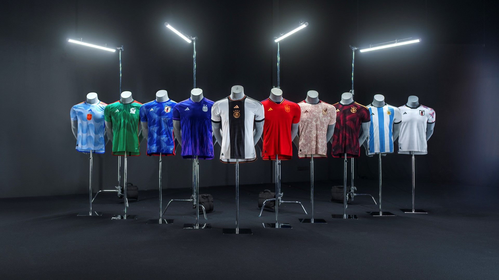

knitr::include_graphics("project1.png")Resume
Veda Jenetty Immaraj
vjenettyimmaraj@gmail.com
Professional Experience
GENPACT - Sr Data Scientist (01-Mar-2021 - 19-Aug-2022)
QUADRATYX - Data Scientist (25-Jan-2019 - 19-Feb-2021)
VIRTUSA - Software Engineer (30-Sept-2015 - 24-Jan-2019)
Professional Summary
Seasoned Data Scientist with 8+ years of experience in end-to-end data science solution development.
Specialized in architecting, developing, and deploying ML solutions on AWS, GCP, and Azure ML Studio.
Proficient in building machine learning and deep learning models for B2B/B2C analytics, supply chain, marketing, and finance.
Skilled in data preprocessing, exploratory data analysis (EDA), deep learning model building, and report generation.
Experienced with NoSQL, SQL, Shell Scripting, Automation scripts, and Tableau for data visualization.
Holds certifications as an AWS Associate Architect and Airflow Astronomer.
Successful track record includes building applications from scratch and handling multiple use cases on AWS.
Key Achievements:
Developed a churn prediction model with 82% accuracy, saving ~.9M $ annually.
Led the conversion of a 1.2 M $ contract from a Hi-Tech customer.
Led the development of a Proof-of-Concept project unlocking an engagement of ~300K $ within 6 months.
Proposed pricing analytics solution for an e-commerce giant with more than 50+ million users and 500k SKU which Uncovered a lift in demand 1.08X and saw an average 4% increase in revenue in A/B Tested groups.
My Best Work in Data Science:
AI-Powered Production Support System for Top-Tier Banking Enterprise (Genpact, Client Deutsche Bank, New York, NY)
Title: AI-Powered Production Support System.
Goal: Design and develop a cutting-edge Production Support System powered by Artificial Intelligence to reduce Mean Time to Recovery (MTTR).
Outcome: Achieved a 15% improvement in MTTR, a 45% reduction in call center hold times, and an anticipated annual savings of $2M.
Responsibilities:
Developed an AI Powered Production Support system using custom-tailored ML models such as Doc2Vec, SBert, and Word2Vec models for the NLP engine.
Designed the Technical Roadmap and Functional Architecture of the Solution.
Collaborated with the client to understand their requirements and charted a path for project implementation.
Tools: GCP, NLP, Jupyter Notebooks, Pycharm.
Football Jersey Forecasting (Genpact, Adidas - EU ECOM, Germany)
knitr::include_graphics("project2.jpg")
Title: Football Jersey Forecasting.
Goal: Forecast the demand for Jerseys for the Elite 5 Clubs and 8 World Cup Federations for year 2022.
Outcome: Managed a €3.2M project aimed at enhancing operational efficiency due to the transfer of star players.
Responsibilities:
Defined the solution roadmap and architected and developed end-to-end solutions.
Conducted comprehensive analysis of client requirements and devised strategies for project implementation.
Built several multivariate time series forecasting models using key features such as historic demand, team performance, Google Trends, PDP visits, etc., to predict future demand for an upcoming season.
Developed an AutoML pipeline to facilitate easy deployment, retraining, and reuse of the model in future projects.
Tools: Azure Cloud, Multivariate Time Series Models, MySQL, Jupyter Notebooks, Pycharm.
Evergreen Churn Analytics (Quadratyx, Hyderabad, India)
knitr::include_graphics("project3.jpg")
Title: Churn Analysis & Modeling.
Outcome: Deployed models providing a powerful tool to mitigate churn and improve customer retention.
Responsibilities:
Led end-to-end delivery of the Early Warning System project, from planning to deployment, ensuring timely and high-quality delivery.
Conducted extensive data preparation from multiple sources, including the digital presence of a customer, contract history, support experience, and adoption metrics, for a data volume of 500K records.
Developed a custom feature selection algorithm to reduce the number of features from 150 to 10 actionable features, improving the model’s interpretability and accuracy.
- Applied various machine learning models, including Logistic Regression, Random Forest, Decision Trees, KNN- Classifier, and Naïve Bayes’, and selected Logistic Regression based on its actionability.
- Tools: Python, SQL Server, Web Framework Django, Models Built: Logistic Regression, Decision Trees, GBM, Random Forest, Boosting.
Other Significant Projects
Self-Learning Machines\Auto-Learning (Quadratyx, Hyderabad, India)
- Objective: Develop an AI platform for Click-Stream analytics to predict lead generation for Adidas's Product teams.
- Outcome: Increased accuracy and actionability of insights using in-house custom algorithm for automated binning of data.
Intelligent Voice Assistant Solution for Seamless Reporting (Quadratyx, Hyderabad, India)
- Objective: Create a dynamic chatbot leveraging conversational interactions to retrieve data from SQL/NoSQL databases.
- Outcome: Designed a highly configurable product enabling querying any structured database using conversational sentences.
AI-Powered Voice Analytics Agent for Microfinance Company (Quadratyx, Hyderabad, India)
- Objective: Minimize net default rate on payments, predict likelihood of an individual defaulting on a loan payment.
- Outcome: Developed solution to extract vital information from real-time voice recordings.
Product Tagging Classification (Quadratyx, Client: Shopify, Hyderabad, India)
- Objective: Improve effectiveness of Project Evergreen by assessing impact of community presence on customer churn.
- Outcome: Developed and implemented a robust text classification engine using NLP techniques and machine learning models.
ML WEB APP (Virtusa Pvt Ltd, Hyderabad, India)
- Objective: Developed an ML WebApp using Flask API backed by the Naïve Bayes model with 75% AUC for product marketing and customer success team.
Chatbot Development (Virtusa Pvt Ltd, Hyderabad, India)
- Objective: Developed a bot using RASA and chatbot LUMA framework to automate L1 & L2 service incidents, enhancing the business process by 40%.
Active Learning in Churn Propensity Model (Virtusa Pvt Ltd, Hyderabad, India)
- Objective: Built a churn propensity model for specific products at CA, automated feature engineering, and developed a real-time dashboard to track model and dataset drifts.
Statistical Analysis (Virtusa Pvt Ltd, Hyderabad, India)
- Objective: Performed various descriptive and inferential statistics and presented insights to the team.
Customer Acquisition Modeling (Virtusa Pvt Ltd, Hyderabad, India)
- Objective: Built propensity models for B2B sales, leveraging campaigns & external intent signals, resulting in an incline in lead to conversion rate by 19%.
Leadership Experience
Team Leadership
- Detail-oriented leader-built ramp-up roadmap for junior/senior data scientists to catalyze the onboarding time to the project.
- Mentored 4 data scientists and analysts to increase productivity and unlock their potential.
Education
- Bachelor of Technology in Computer Science & Engineering from JNTU-Hyderabad.
- Master's in data science and advanced data Analytics at the University of North Texas, Denton.
Certifications
- Data Science & Big Data Analytics - Certified by LTI of Carnegie Mellon University certification in 2016 - ranked 3rd worldwide.
Technical Skills
Tools
- Pycharm, SAS, GCP cloud, AWS cloud, Microsoft Azure ML Studio, Airflow, PowerPoint, Power BI, Tableau, Excel, MS SQL Server, MySQL, PostgreSQL, Teradata, MLOps, Snowflake
Programming
- Python, NumPy, Pandas, Matplotlib, SciPy, Scikit-Learn, Kera's, TensorFlow, R, SQL, Spark, Hadoop, Hive
Analytics
- Regression, Classification, Clustering, Hypothesis Testing, A/B Testing, T-test, F-Test, ANOVA, Forecasting, statistical methods, supervised learning, unsupervised learning, cross-validation, statistical modeling, Predictive Analytics
Machine Learning
- Principal Component Analysis, Natural Language Processing, Deep Learning, AI/ML algorithms, Autoencoders, Text Analytics